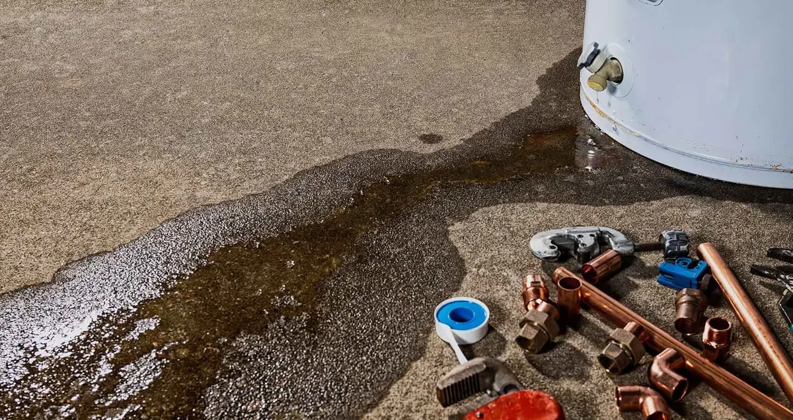
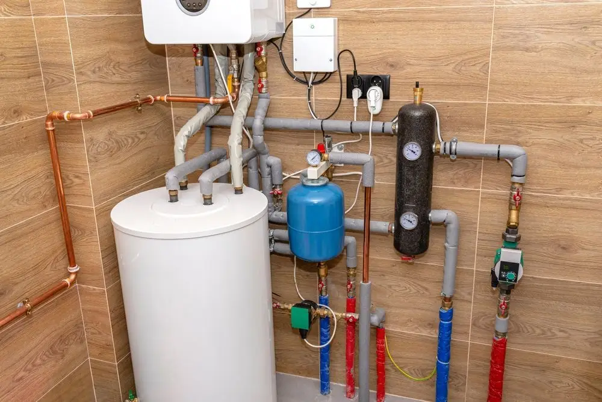
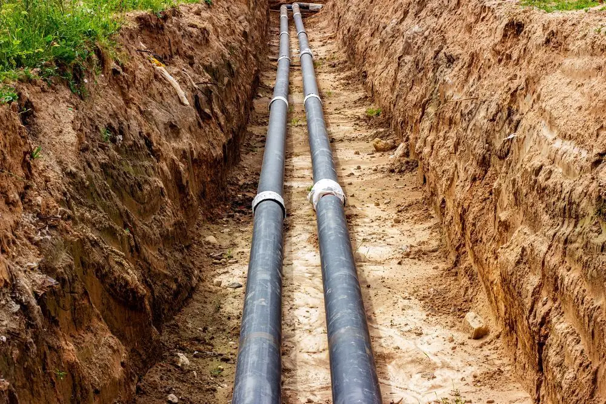
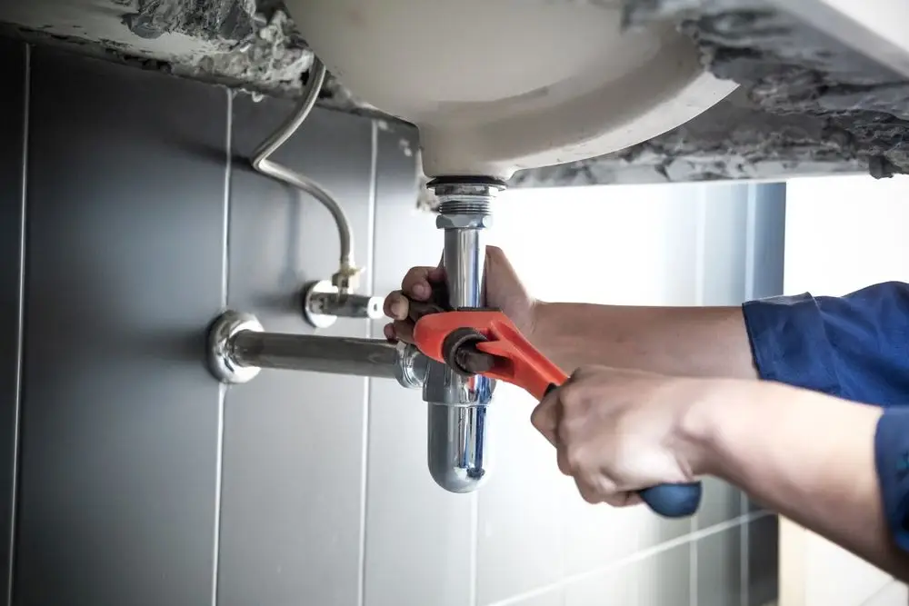
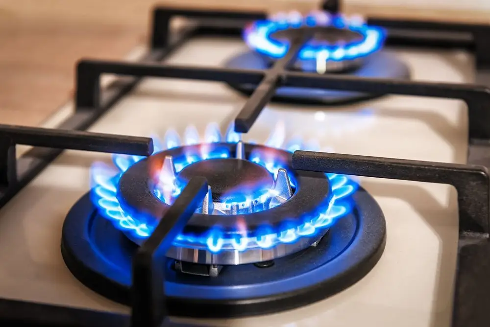
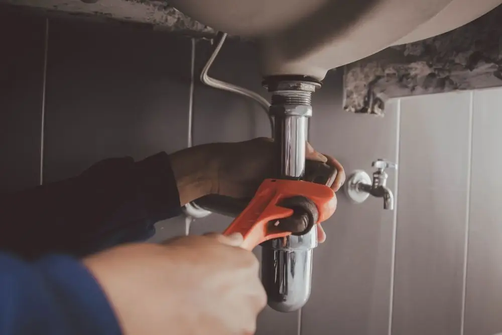

Lufkin, TX · Family-owned · Free estimates
Your go-to plumbers for any problem
We offer residential and commercial plumbing services in the Lufkin, TX area. Fast, reliable service with open and honest communication.
Get your plumbing back in peak condition
Loggins Plumbing takes pride in offering reliable commercial and residential plumbing services to the Lufkin, TX area. Our family-owned business understands the importance of top-quality service, which is why we are committed to providing fast, dependable help. We are also medical gas certified, which means we meet the highest standards for specialized medical gas services. Whether you need a small repair or a complex installation, our expertise will bring you exceptional results.

Water Heater Installs
Residential and commercial water heater installation, replacement and repair, gas and electric.
Learn more →
Water and Gas Line Repair
Line repairs and replacements, leak detection and preventive maintenance.
Learn more →
General Plumbing Repair
Leaks, clogs, appliance repairs and backflow detection.
Learn more →
Gas Appliance Installation
Installation, repair and inspection of gas appliances, from stoves to space heaters.
Learn more →Why work with us?
There is no shortage of plumbers out there. But you can trust us over the competition because we offer:
- Free estimates
- Senior discounts
- Open, honest communication
Experience great service every step of the way by reaching out to our team of experts today. We will make your plumbing project a breeze.

Discover all our plumbing services
- Water heater installations
- Water or gas line repairs
- General plumbing repairs
- Gas appliance installations
We prioritize your satisfaction and make plumbing simple and stress-free.
Visit
101 Industrial Blvd, Suite 109
Lufkin, TX 75904
- Mon–Fri
- 7:30 am – 4:30 pm
- Sat–Sun
- Closed
Emergency 24/7 service available.
Call (936) 639-3073On the job
Illustrative photos from the current Loggins website.
What customers say
Read what Lufkin customers write about Loggins Plumbing on Google and Yelp, or leave your own review after the job.
Family-owned
Free estimates, senior discounts and open, honest communication on every job.
Call (936) 639-3073Questions we hear in Lufkin
Do you offer free estimates?
Yes. Loggins Plumbing offers free estimates, and we also offer senior discounts. Call (936) 639-3073.
Do you work on both homes and businesses?
Yes. We do residential and commercial plumbing, including water heaters, water and gas line repair, gas appliance installation and general plumbing repair.
Why does hard water matter for my water heater?
Lufkin water carries moderate-to-high mineral content. Sediment settles at the bottom of a tank, makes the burner work harder, raises energy costs and can shorten the life of the unit.
What should I check before switching to a tankless water heater?
Gas line sizing. An undersized supply line makes a tankless unit cycle incorrectly and causes temperature swings, so the line should match the new equipment before the install.
Are you certified for medical gas work?
Yes. We are medical gas certified and meet the highest standards for specialized medical gas services.
Is emergency service available?
Emergency 24/7 service is available. Office hours are Monday to Friday, 7:30 am to 4:30 pm.
Still have a question?
Call us and get a free estimate. Emergency 24/7 service available.
Call (936) 639-3073Send a messageService area
Proudly serving Lufkin, TX and the surrounding areas, with residential, commercial and healthcare facilities.
- Lufkin, TX and Angelina County
- Commercial corridor along US-59
- Healthcare facilities (medical gas certified)